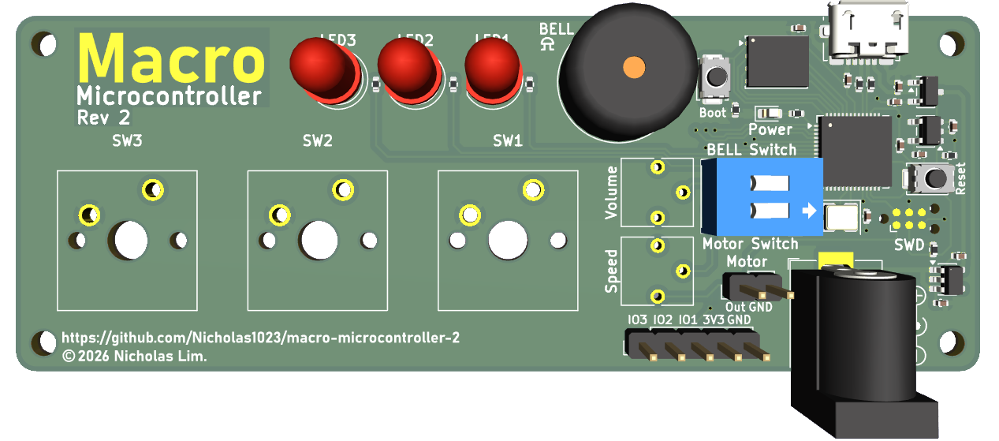
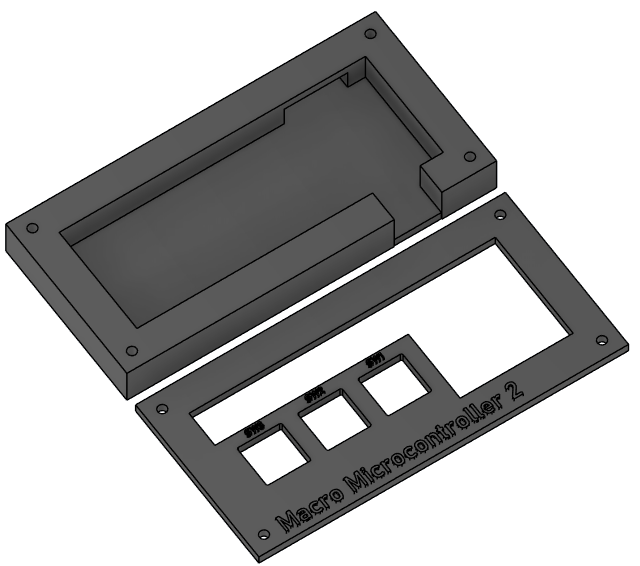
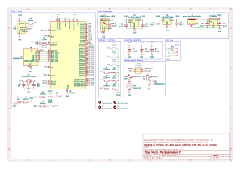

Macro Microcontroller 2, a macropad + microcontroller development board that controls GPIO pin output using keys with a custom BASIC interpreter firmware.
Hardware Specifications
Dimensions: 96.52 × 35.56 mm
Microcontroller: RP2040
Flash Memory: 4MiB
Power: 3.3V
Downloads
Other source files (PCB, production and bill of material files) are available for download at https://github.com/Nicholas1023/macro-microcontroller-2
Firmware
Macro Microcontroller BASIC is a custom BASIC interpreter for Macro Microcontroller 2. To install the firmware on your board, hold the boot button and plug it into your computer. A storage drive will appear. Drag and drop the downloaded file into the drive to install. See Release notes and attribution.
Download macro-microcontroller-basic-0.0.3.uf2 via releases. View source code.
SHA256 Checksum:
96d4aa58d61d796067c1668cc37896fa968a55dceea188e50f26e067d116e99fEnclosure
Download macro-microcontroller-2-enclosure.stl

Schematics
Download macro-microcontroller-2-schematics.pdf
